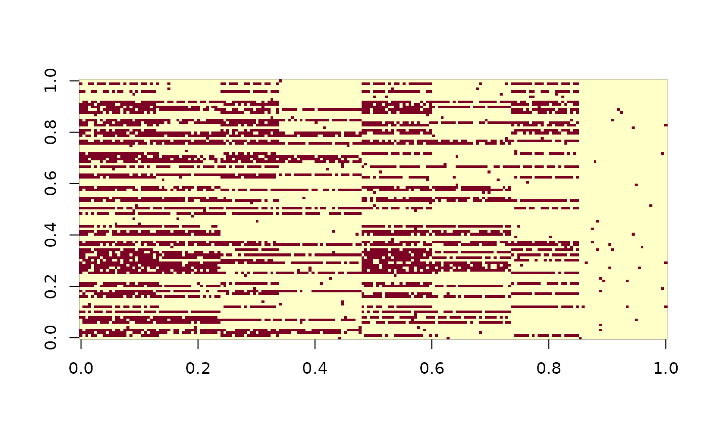

This function takes in options_sim and simulate as specified by the options.
NB: currently only supports logical "Or", or DINO model. Other restricted latent
class models need to be added.
NB: alpha1 needs to be update
simulate_data(options_sim, SETSEED = FALSE)| options_sim | options for simulating data:
|
|---|---|
| SETSEED |
|
datmat a matrix for multivariate binary observations from the assumed boolean
matrix factorization,
Q A Q-matrix,
H_star A binary matrix of dimension K by M, for K clusters, and M
latent states,
Z A vector of length N for individual cluster indicators,
xi a binary matrix of dimension N by L for true presence or absence of proteins
Eta A binary matrix of dimension N by M for presence or absence of
latent states among all subjects.
# simulate data:
L0 <- 100
options_sim0 <- list(N = 200, # sample size.
M = 3, # true number of machines.
L = L0, # number of antibody landmarks.
K = 8, # number of true components.,
theta = rep(0.8,L0), # true positive rates
psi = rep(0.01,L0), # false positive rates
alpha1 = 1 # half of the people have the first machine.
)
simu <- simulate_data(options_sim0, SETSEED=TRUE)
simu_dat <- simu$datmat
image(simu_dat)
